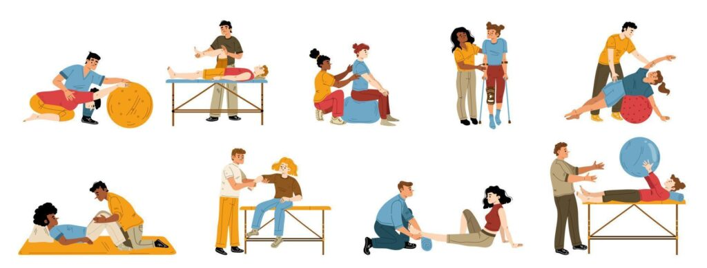
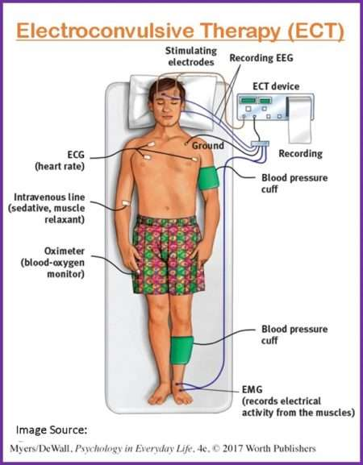
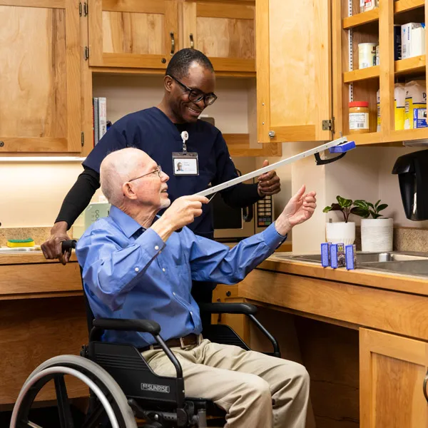
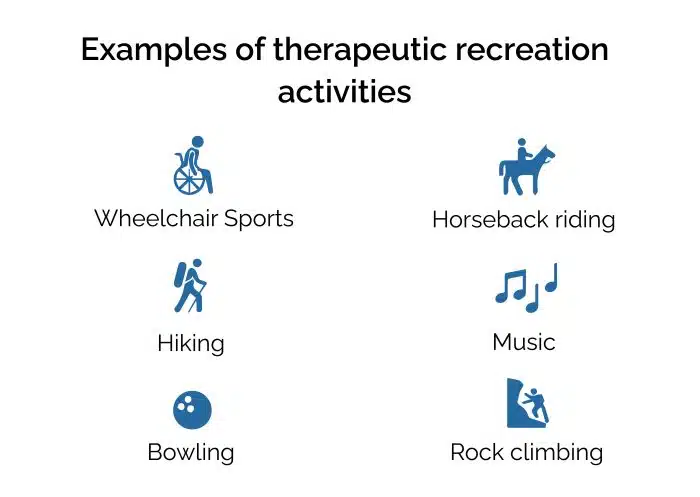

Table of Contents
ToggleTHERAPEUTIC MODALITIES IN PSYCHIATRY
Therapeutic modalities refers to different types of care provided by psychiatric nurses to individual patients, groups and families.
Therapy is the treatment of someone with mental or physical illness without the use of drugs or operations.
Psychiatric treatment aims to manage mental health disorders, alleviate symptoms, and improve patients’ overall quality of life. Treatment combines physical and psychological methods to address different aspects of mental illness, supporting recovery and helping patients maintain stability.
Goals of Treatment in Psychiatry
- Reduction of Symptoms Severity: Alleviating symptoms such as anxiety, depression, hallucinations, or manic episodes.
- Maintenance of Stability: Preventing relapse or the re-emergence of severe symptoms.
- Enhanced Quality of Life: Helping patients achieve and sustain mental well-being, social integration, and functionality.
- Promoting Recovery: Aiding patients in gaining control over their lives and maintaining a sense of purpose and autonomy.
Types of Treatment Modalities
Psychiatric treatments are typically divided into two main types:
- Physical (Biomedical) Treatments: Directly target brain chemistry or brain function.
- Psychological (Therapeutic) Treatments: Focus on altering thought patterns, behaviors, and emotional responses.
Many patients receive a combination of physical and psychological treatments for comprehensive care.

Physical (Biomedical) Treatments
Biomedical treatments in psychiatry directly aim to alter brain chemistry or function to alleviate mental health symptoms.
This can involve medication, such as antidepressants, antipsychotics, or mood stabilizers; brain stimulation therapies like electroconvulsive therapy (ECT) or transcranial magnetic stimulation (TMS); or even surgery in rare, severe cases.
Physical Therapy
- Drug Treatment (Psychopharmacology). More notes about drug treatment, click the links below for each of the classification.
- ElectroConvulsive Therapy.
- Occupational Therapy
- Recreational Therapy

Electroconvulsive Therapy (ECT)
Electroconvulsive therapy (ECT) is a medical procedure involving the induction of a controlled seizure using electrical currents passed through the brain.
While its mechanism isn’t fully understood, it’s a highly effective treatment for specific mental health conditions. This guide provides a detailed overview, encompassing indications, contraindications, procedure, nursing care, and potential complications.
I. Introduction to ECT:
Definition: ECT is a physical therapy utilizing electrodes to deliver an electrical current to the brain, inducing a generalized seizure. This seizure is believed to trigger therapeutic changes in brain chemistry and function.
Modified ECT: Modern ECT is a carefully controlled procedure performed under general anesthesia, minimizing discomfort and risk.
Multidisciplinary Team: ECT requires a specialized team including an anesthesiologist, psychiatrist, registered nurses (RNs) skilled in ECT, and potentially other healthcare professionals such as respiratory therapists. The RN/RM plays a big role in pre-treatment preparation, intra-procedural monitoring, and post-treatment care.
II. Indications for ECT:
ECT is considered a first-line or primary treatment for severe cases where other treatments have failed or are unsuitable. Its effectiveness often surpasses that of antidepressant medications, especially in acute situations:
- Severe Major Depressive Disorder (MDD): Especially when accompanied by psychotic features, suicidal ideation, or catatonia.
- Acute Manic Episodes: In bipolar disorder, particularly when severe or unresponsive to other treatments.
- Mood Disorders with Psychotic Features: Hallucinations or delusions accompanying mood disturbances.
- Treatment Intolerance or Resistance: When patients cannot tolerate or do not respond to other treatments, including medications, psychotherapy, or other somatic therapies.
- Suicidal Ideation or Severe Lethargy: ECT can rapidly alleviate profound depression and reduce suicidal risk.
- Catatonia: A state of immobility and unresponsiveness.
- Postpartum Psychosis: Severe mental illness occurring after childbirth.
- Treatment-Resistant Schizophrenia: In cases where typical antipsychotics and other treatments have proven ineffective.
III. Contraindications to ECT:
Absolute contraindications are rare but include conditions that could be exacerbated by the procedure:
- Increased Intracranial Pressure (ICP): Conditions such as brain tumors, recent strokes, or severe head injuries raise ICP, making ECT risky.
- Recent Myocardial Infarction (MI): The stress of ECT could potentially trigger cardiac complications in patients who have recently had a heart attack.
- Uncontrolled Hypertension: High blood pressure needs to be stabilized before ECT is considered.
- Significant Cardiovascular Disease: Severe heart conditions may pose significant risks.
- Uncontrolled Epilepsy: While ECT may treat depression in people with epilepsy, it carries the risk of inducing further seizures in those with poorly controlled epilepsy.
- Aneurysms (Brain or Aortic): The procedure could cause rupture of aneurysms.
- Severe Respiratory Conditions: Conditions that might interfere with respiration during the procedure.
IV. Mechanism of Action:
The precise mechanism of ECT remains under investigation. However, several theories exist:
- Neurotransmitter Modulation: ECT is believed to influence the levels and activity of neurotransmitters such as serotonin, norepinephrine, and dopamine, which are implicated in mood regulation.
- Neurogenesis and Neuroplasticity: Some research suggests that ECT may stimulate the growth of new neurons (neurogenesis) and enhance the brain’s ability to reorganize and adapt (neuroplasticity).
- Brain Storm Hypothesis: The induced seizure acts as a “brain reset,” disrupting maladaptive neural pathways associated with depression.
- Anti-inflammatory Effects: Recent research also indicates potential anti-inflammatory effects.
V. Procedure and Techniques:
- Pre-Treatment Assessment: A thorough physical and psychiatric evaluation, including medication review and electrocardiogram (ECG).
- Informed Consent: Obtaining informed consent from the patient (when possible) or their legal guardian.
- Anesthesia: General anesthesia is administered to ensure patient comfort and safety. Muscle relaxants are also typically given to reduce muscle contractions during the seizure.
- Electrode Placement: Electrodes are placed on the scalp, usually bilaterally (on both sides of the head), although unilateral placement (one side) is also an option minimizing cognitive side effects.
- Electrical Stimulation: A brief electrical pulse is delivered, inducing a seizure lasting approximately 30-60 seconds. The seizure is monitored using EEG.
- Post-ECT Recovery: The patient is closely monitored in a recovery area until fully awake and stable.
VI. Indications for ECT (Detailed):
- Major Depressive Disorder: ECT is highly effective for severe, treatment-resistant depression, particularly when associated with psychotic features or suicidal ideation.
- Bipolar Disorder (Manic Phase): ECT can rapidly stabilize acute mania, especially when medication is ineffective or poorly tolerated.
- Schizophrenia: Useful in treatment-resistant cases, particularly when catatonia is present.
- Catatonia: ECT is often the first-line treatment for catatonia due to its rapid effects.
- Obsessive-Compulsive Disorder (OCD): May be helpful in treatment-resistant cases.
- Puerperal Psychosis: A severe mood disorder occurring after childbirth.

VII. Nursing Care in ECT (Detailed):
A. Pre-ECT:
- Patient Education: Explain the procedure, including sensations, potential side effects, and post-ECT care. Address patient anxieties and concerns. Provide clear and concise information, using simple language.
- Assessment: Thoroughly assess the patient’s vital signs, medical history, medication list (including noting any recent changes), and mental status. Note any allergies, especially to anesthesia medications. Assess for any contraindications.
- NPO Status: Ensure the patient is NPO (nothing by mouth) for a specified period before the procedure, typically 6-8 hours.
- Consent: Verify that informed consent has been obtained. Document the consent process thoroughly.
- Baseline Data: Record baseline vital signs, ECG, and any other relevant assessments.
- Preparation: Assist with the removal of any prostheses, jewelry, or glasses. Help the patient change into a gown and remove any metal objects from their clothing.
- Anxiety Management: Employ relaxation techniques such as deep breathing exercises or guided imagery to reduce anxiety.
B. During ECT:
- Monitoring: Continuously monitor vital signs, ECG, EEG, and oxygen saturation during the procedure. Observe the patient’s response to the electrical stimulation and note the duration and characteristics of the seizure.
- Medication Administration: Assist the anesthesiologist in administering medications as prescribed (e.g., anesthetic agents, muscle relaxants).
- Positioning and Support: Properly position the patient to facilitate optimal electrode placement and seizure monitoring. Provide support and reassurance during the procedure.
- Emergency Preparedness: Remain vigilant for any complications, such as cardiac arrhythmias or respiratory distress, and be prepared to assist with emergency interventions as needed.
C. Post-ECT:
- Recovery Monitoring: Closely monitor the patient’s vital signs, level of consciousness, and neurological status during the recovery period. This includes regular checks of oxygen saturation, heart rate, blood pressure, and respiratory rate. Note any signs of confusion, disorientation, or nausea.
- Post-Seizure Care: Provide suctioning as needed to clear any secretions. Administer oxygen if necessary.
- Reorientation: Assist the patient with reorientation to their surroundings as they regain consciousness.
- Pain Management: Assess for and manage any post-procedural pain or discomfort.
- Documentation: Accurately document all aspects of the patient’s care, including pre-procedure assessment, procedure details, post-procedure monitoring, and any complications or adverse events.
- Discharge Planning: Provide clear discharge instructions, including medication schedules, follow-up appointments, and potential side effects to watch out for.
VIII. Potential Complications:
- Cognitive Impairment: Short-term memory loss is a common side effect, usually resolving within a few weeks. More significant cognitive deficits are less frequent.
- Headache: Many patients experience headaches after the procedure.
- Muscle aches: Muscle soreness can occur due to muscle relaxants.
- Nausea and Vomiting: These are relatively common side effects.
- Cardiac Arrhythmias: Rare but serious complications, necessitating close cardiac monitoring.
- Fractures: Rare, but the convulsive movements during a seizure could potentially cause fractures.
- Aspiration: There is a small risk of aspiration of vomit or secretions.
IX. Post-ECT Patient Education:
- Memory Issues: Explain the temporary nature of memory loss and the likelihood of improvement. Encourage the patient to keep a diary or use memory aids if necessary.
- Medication Adherence: Emphasize the importance of continuing prescribed medications.
- Follow-up Appointments: Stress the importance of attending all scheduled appointments.
- Lifestyle Recommendations: Encourage healthy lifestyle choices, such as getting sufficient sleep and avoiding alcohol and other substances.
- Support Systems: Help the patient connect with support systems such as family, friends, or support groups.
X. Documentation:
Comprehensive and meticulous documentation is essential. This includes:
- Pre-ECT assessment: Detailed medical history, medication list, allergies, vital signs, and mental status.
- Procedure details: Type of ECT (unilateral, bilateral), electrode placement, electrical parameters, seizure duration, and any complications during the procedure.
- Post-ECT monitoring: Vital signs, neurological assessment, level of consciousness, and any adverse events.
- Medication administration: Record all medications administered, including dosages and times.
- Patient response: Document the patient’s response to the procedure, including any relief of symptoms and any side effects experienced.

Occupational Therapy (OT)
Occupational therapy involves structured activities to help patients regain or acquire skills for daily living, aiming to restore independence and functionality.
It focuses on enabling individuals to participate in the activities of everyday life, enhancing their quality of life and overall well-being.
Types of Occupational Therapy:
Pediatric OT:
- Focus: Helps children with developmental issues such as ADHD, autism, cerebral palsy, and learning disabilities.
- Goals: Improve fine and gross motor skills, sensory processing, cognitive abilities, and social interaction.
- Interventions: Play activities, sensory integration, handwriting practice, and adaptive equipment.
Geriatric OT:
- Focus: Assists the elderly with daily tasks to maintain independence and quality of life.
- Goals: Enhance mobility, prevent falls, improve cognitive function, and promote social engagement.
- Interventions: Home modifications, adaptive equipment, cognitive training, and community integration.
Mental Health OT:
- Focus: Aids individuals with mental illnesses in developing routines and improving self-care.
- Goals: Foster independence, improve coping skills, enhance social interaction, and promote emotional well-being.
- Interventions: Life skills training, stress management, vocational rehabilitation, and group therapy.
Physical Rehabilitation OT:
- Focus: Helps individuals recovering from physical injuries, surgeries, or illnesses.
- Goals: Restore physical function, improve mobility, reduce pain, and enhance overall health.
- Interventions: Therapeutic exercises, manual therapy, adaptive equipment, and pain management techniques.
Neurological OT:
- Focus: Supports individuals with neurological conditions such as stroke, Parkinson’s disease, and multiple sclerosis.
- Goals: Improve motor function, cognitive abilities, and daily living skills.
- Interventions: Neurodevelopmental techniques, cognitive rehabilitation, and adaptive strategies for daily activities.
Core Areas of OT:
Self-Care Skills:
- Bathing: Assisting patients in maintaining personal hygiene and independence in bathing.
- Dressing: Helping patients develop the skills to dress themselves appropriately.
- Eating: Enhancing patients’ ability to feed themselves and maintain proper nutrition.
- Toileting: Supporting patients in managing their toileting needs independently.
Social Skills:
- Communication: Improving verbal and non-verbal communication skills.
- Cooperation: Fostering the ability to work with others and participate in group activities.
- Appropriate Interactions: Teaching patients how to interact socially in a manner that is respectful and effective.
Academic and Vocational Skills:
- Task Completion: Helping patients develop the ability to complete tasks efficiently and effectively.
- Productivity: Enhancing patients’ capacity to be productive in academic or work settings.
- Goal Setting: Assisting patients in setting and achieving realistic goals related to their academic or vocational pursuits.
Motor Skills:
- Fine Motor Skills: Improving hand-eye coordination, dexterity, and precision in tasks requiring fine movements.
- Gross Motor Skills: Enhancing large muscle movements, balance, and coordination.
Cognitive Skills:
- Problem-Solving: Developing the ability to identify problems, generate solutions, and make decisions.
- Memory: Enhancing short-term and long-term memory through various cognitive exercises.
- Attention: Improving the ability to focus and sustain attention on tasks.
Sensory Integration:
- Sensory Processing: Helping individuals process and respond to sensory information from the environment.
- Sensory Modulation: Teaching strategies to manage sensory input and reduce sensory overload.
Role of Nurses in OT:
Assessment and Planning:
- Conduct Assessments: Evaluate the patient’s physical, cognitive, and emotional needs to determine the appropriate OT interventions.
- Plan Activities: Develop a personalized OT plan that addresses the patient’s specific goals and challenges.
Execution and Documentation:
- Oversee Activities: Supervise the implementation of OT activities to ensure they are performed safely and effectively.
- Document Progress: Record the patient’s progress, challenges, and outcomes to adjust the OT plan as needed.
Support and Motivation:
- Provide Emotional Support: Offer encouragement and emotional support to help patients stay motivated and engaged in their OT program.
- Motivate Patients: Use positive reinforcement and goal-setting techniques to motivate patients to achieve their OT objectives.
Collaboration:
- Interdisciplinary Teamwork: Work closely with occupational therapists, physicians, and other healthcare professionals to provide comprehensive care.
- Family Involvement: Educate and involve family members in the OT process to support the patient’s progress and independence.
Education:
- Patient Education: Teach patients about their condition, the benefits of OT, and strategies to manage their daily activities.
- Caregiver Training: Provide training and resources for caregivers to support the patient’s OT goals at home.
Advocacy:
- Patient Advocacy: Advocate for the patient’s needs and rights within the healthcare system.
- Community Resources: Connect patients with community resources and support services to enhance their quality of life.
Recreational Therapy
Recreation is a form of activity therapy used in most psychiatric settings. These include Music therapy, drama therapy, art therapy, and sports.
Recreational Therapy is a planned therapeutic activity that enables people with limitations to engage in recreational experiences.
Aims:
- To encourage social interaction.
- To decrease withdrawal tendencies.
- To provide an outlet for feelings.
- To promote socially acceptable behavior.
- To develop skills, talents, and abilities.
- To increase physical confidence and a feeling of self-worth.

Types of Recreational Activities:
Motor Forms:
- Fundamental Forms: Such games as hockey and football.
- Accessory Forms: Exemplified by play activity and dancing.
Sensory Forms:
- Visual: Such as looking at motion pictures or play.
- Auditory: Such as listening to a concert.
Intellectual Forms:
- Includes reading, debating, and so on.
Suggested Recreational Activities for Psychiatric Disorders:
Anxiety Disorders: Aerobic activities like walking, jogging, etc.
Depressive Disorder: Non-competitive sports, which provide an outlet for anger, like jogging, walking, running, etc.
Manic Disorder: One-to-one basis individual games like shuttle badminton, ball badminton, etc.
Schizophrenia (Paranoid): Activities requiring concentration like chess, puzzles.
Schizophrenia (Catatonic): Social activities to give the patient contact with reality like dancing, athletics.
Dementia: Concrete, repetitious crafts and projects that breed familiarization and comfort.
Mental Retardation: Activities should be according to the patient’s level of functioning such as walking, dancing, swimming, ball playing, etc.
Uses/Advantages:
- Skill Development: Enhances physical, cognitive, and social skills.
- Emotional Well-being: Improves emotional well-being and reduces stress and anxiety.
- Social Integration: Promotes social integration and community involvement.
- Motivation: Increases motivation and engagement in treatment.
Roles of Nurses/Midwives:
- Planning: Plan and implement recreational therapy activities.
- Assessment: Assess the patient’s needs and preferences for recreational activities.
- Collaboration: Work with recreational therapists to integrate activities into the care plan.
- Encouragement: Encourage participation and provide support during activities.
Other Therapeutic Modalities:
These include;
Play Therapy
Play therapy is a form of counseling or psychotherapy that uses play to help children express their feelings, work through emotional difficulties, and develop coping mechanisms.
It is based on the idea that play is a natural medium for children to express themselves and learn about their world.
Play is a natural mode of growth and development in children.
Curative Functions:
- It releases tension and pent-up emotions.
- It allows compensation for loss and failures.
- It improves emotional growth through the child’s relationship with other children.
- It provides an opportunity for the child to act out his fantasies and conflicts, to get rid of aggression, and to learn positive qualities from other children.
Types of Play Therapy:
Individual vs Group Play Therapy:
- In individual therapy, the child is allowed to play by himself, and the therapist’s attention is focused on this one child alone.
- In group play therapy, other children are involved.
Free Play vs Controlled Play Therapy:
- In free play, the child is given freedom in deciding with what toys he wants to play.
- In controlled play therapy, the child is introduced into a scene where the situation or setting is already established.
Structured vs Unstructured Play Therapy:
- Structured play therapy involves organizing the situation in such a way so as to obtain more information.
- In unstructured play therapy, no situation is set, and no plans are followed.
Directive vs Non-Directive Play Therapy:
- In directive play therapy, the therapist totally sets the directions.
- In non-directive play therapy, the child receives no directions.
Play therapy is generally conducted in a playroom. The playroom should be suitably stocked with adequate play material, depending upon the problems of the child.
Phases of Play Therapy:
(i) Introductory Phase: The first task of the therapist is to gain the child’s trust. This may happen in 5 minutes or months, depending on the personality and prior experiences of the child.
(ii) Honeymoon Phase: Children, like adults in therapy, usually go through a honeymoon period when the relief from finally being able to express some of their anxieties is so great that their demeanor at home and school improves dramatically.
(iii) Rebellious Phase: At this point, the child often voices strong anger about having to attend therapy sessions. Usually, the child is voicing strong anger about almost everything else as well, and parents begin to wonder whether therapy is a constrictive or destructive endeavor.
(iv) The Working-Through Phase: Becoming aware of what one is feeling, learning more productive methods of expressing feelings, and developing healthier defenses are some of the tasks achieved in this phase.
(v) Termination Phase: The longer and more intense the sessions have been, the more difficult termination will be for the child. Many of the child’s original symptoms do reappear.
Uses/Advantages:
- Emotional Expression: Allows children to express emotions and experiences that they might not be able to verbalize.
- Problem-Solving: Helps children develop problem-solving skills and coping mechanisms.
- Safe Environment: Provides a safe and non-judgmental space for children to explore and resolve issues.
- Family Involvement: Can involve parents or caregivers to improve family dynamics and communication.
Roles of Nurses/Midwives:
- Facilitation: Nurses can facilitate play therapy sessions, ensuring a safe and supportive environment.
- Observation: Monitor the child’s behavior and emotional responses during play.
- Education: Educate parents and caregivers about the benefits and techniques of play therapy.
- Documentation: Document the child’s progress and communicate findings to the healthcare team.
Psychodrama
Psychodrama is a specialized type of group therapy that employs a dramatic approach in which patients become actors in life-situation scenarios.
The goal is to resolve interpersonal conflicts in a less threatening atmosphere than the real-life situation would present. The primary advantage of psychodrama is its direct access to re-enacting painful situations so that the painful emotions associated with them can be reworked, with the potential for spontaneously learning new responses in a safe therapeutic environment.
Psychodrama is used to treat a variety of conditions, including:
- Addiction
- Trauma
- Autism
- Eating Disorders
- Adoption and Attachment Issues
Benefits of Psychodrama:
- Improve their relationships and communication skills.
- Overcome grief and loss.
- Restore confidence and well-being.
- Enhance learning and life skills.
- Express their feelings in a safe, supportive environment.
- Experiment with new ways of thinking and behaving.
Uses/Advantages:
- Insight Development: Helps individuals gain insight into their emotions and behaviors.
- Conflict Resolution: Assists in resolving interpersonal conflicts and improving relationships.
- Catharsis: Provides an outlet for emotional release and catharsis.
- Skill Building: Enhances communication and social skills.
Roles of Nurses/Midwives:
- Support: Provide emotional support and encouragement during sessions.
- Safety: Ensure a safe and respectful environment for participants.
- Feedback: Offer constructive feedback and observations during role-playing.
- Integration: Help participants integrate insights gained from psychodrama into their daily lives.
Music Therapy
Music therapy is the functional application of music towards the attainment of specific therapeutic goals.
Music therapy may improve forgetfulness (dementia) by:
- Improving your connection to others.
- Helping the brain produce a calming substance (melatonin).
- Improving how well you speak.
- Improving long-term and medium-term memory.
- May help babies born too early to deal with necessary but painful procedures. Crying is often affected by music.
- Is used to reduce the pain of cancer treatment.
Uses/Advantages:
- Facilitates emotional expressions.
- Improves cognitive skills like learning, listening, and attention span.
- Social interaction is stimulated.
- Emotional Regulation: Helps regulate emotions and reduce stress and anxiety.
- Cognitive Stimulation: Enhances cognitive functions such as memory and attention.
- Social Interaction: Promotes social interaction and communication.
- Physical Benefits: Can improve motor skills and physical rehabilitation.
Roles of Nurses/Midwives:
- Assessment: Assess the patient’s response to music therapy and adjust interventions accordingly.
- Implementation: Implement music therapy interventions as part of the care plan.
- Collaboration: Work with music therapists to integrate music therapy into the overall treatment plan.
- Advocacy: Advocate for the use of music therapy in healthcare settings.
Dance Therapy
Dance therapy, also known as dance/movement therapy, is the psychotherapeutic use of movement to promote emotional, cognitive, physical, and social integration.
It is based on the idea that the body and mind are interconnected.
It is a psychotherapeutic use of movement, which furthers the emotional and physical integration of the individual.
Advantages:
- Helps to develop body awareness.
- Facilitates expression of feelings.
- Improves interaction and communication.
- Fosters integration of physical, emotional, and social experiences that result in a sense of increased self-confidence and contentment.
- Exercise through body movement maintains good circulation and muscle tone.
- Emotional Expression: Allows for the expression of emotions through movement.
- Body Awareness: Increases body awareness and self-esteem.
- Stress Reduction: Helps reduce stress, anxiety, and depression.
- Social Connection: Enhances social skills and fosters a sense of community.
Roles of Nurses/Midwives:
- Facilitation: Facilitate dance therapy sessions and ensure a safe environment.
- Observation: Observe participants’ movements and emotional responses.
- Support: Provide emotional support and encouragement during sessions.
- Integration: Help participants integrate the benefits of dance therapy into their daily lives.
Relaxation Therapies
Relaxation therapies are techniques used to reduce stress, anxiety, and tension.
They include yoga, meditation, biofeedback, physical exercise, and deep breathing exercises.
Relaxation produces physiological effects opposite those of anxiety: slowed heart rate, increased peripheral blood flow, and neuromuscular stability. There are many methods which can be used to induce relaxation.
Mental Imagery: Mental imagery is a relaxation method in which patients are instructed to imagine themselves in a place associated with pleasant, relaxed memories. Such images allow patients to enter a relaxed state or experience a feeling of calmness and tranquility.
The nurse using guided imagery can promote a sense of well-being in patients and help them change their perceptions about their disease, treatment, and healing ability. Nurses can assist patients with imagery during a painful or stressful event.
Yoga: Yoga is based on the ancient Indian philosophy principle of mind-body unity; a chronically restless or agitated mind will result in poor health and decreased mental clarity. Yoga uses a combination of physical postures (Asanas), breathing techniques (Pranayamas), and meditation to promote relaxation and enhance the flow of vital energy called prana.
This is brought about by the following steps:
- Self-control (Yama): Obtained by such devices as chastity, non-stealing, non-violence, truthfulness, and avoidance of greed.
- Religious observance (Niyama): Through chanting of the Vedic hymns, austerity, purity, and contentment.
- Assumption of certain positions (Asana).
- Regulation of the breath (Pranayama): With controlled rhythmic exhalation, inhalation, and temporary suspension of breathing.
- Restraint of the senses (Pratyahara).
- Steadying of the mind (Dharana): Through fixation on some part of the body, such as the nose or navel.
- Meditation (Dhyana): On the true object of knowledge, the supreme spirit, to the exclusion of other things in life.
Concepts of Yoga:
- Pranayama: Also called “Yogic breath” or “Three-part breath” or “complete breath.”
- It is a scientific breathing exercise in which the lungs are completely filled with air, leading to expand and stretch it gently.
- This process of breathing exercise is very much helpful in improving the lung capacity, especially in peak expiratory flow rate.
- Every one of us might have heard about the importance of deep breathing exercise, and this practice has a link towards good emotional balance.
Benefits of Pranayama Therapy:
- Reduces stress and anxiety.
- Provides a sense of well-being.
- Keeps our body very young.
- Enhances the balance of our nervous system and allows us to think creatively.
- Increases the amount of oxygen supply to the brain, thereby improving mental alertness and physical well-being.
- Increases the digestion process.
- Helps our body to use oxygen more efficiently and improve the present state of health.
- Removes toxins and stale air from the lungs.
- Strengthens the diaphragm and respiratory muscles.
Biofeedback: Biofeedback is based on the idea that the autonomic nervous system can come under voluntary control through operant conditioning. Biofeedback is the use of instrumentation to become aware of processes in the body that usually go unnoticed and to help bring them under voluntary control.
Biological conditions, such as muscle tension, skin surface temperature, blood pressure, and heart rate, are monitored by the biofeedback equipment. People learn to control these functions by hearing or seeing signals from instruments. With special training, the individual learns to use relaxation and voluntary control to modify the biological condition, in turn indicating a modification of the autonomic function it represents.
Indications: Biofeedback is being employed in migraine, hypertension, phobias, low backache, cerebral palsy, hemiplegia, irritable bowel syndrome, cardiac problems, and several other neuro-psychiatric conditions.
Physical Exercise: Regular exercise is the most effective method of relieving stress. Physical exertion provides a natural outlet for the tension produced by the body in its state of arousal for “fight or flight.” Aerobic exercises strengthen the cardiovascular system and increase the body’s ability to use oxygen more efficiently.
Aerobic exercises include brisk walking, jogging, running, cycling, swimming, and dancing. To achieve the benefits of exercises, they must be performed regularly for at least 30 minutes per day. Studies indicate that physical exercise can be effective in reducing general anxiety and depression. Vigorous exercise has been shown to increase levels of serotonin and beta-endorphins; both chemicals have been implicated in mood regulation. Depressed people are often deficient in serotonin. Endorphins act as natural narcotics and mood elevators.
Deep Breathing Exercise: Tension is released when the lungs are allowed to breathe in as much oxygen as possible. Breathing exercises have been found to be effective in reducing anxiety, depression, irritability, muscular tension, and fatigue.
Technique: Sit or lie down comfortably, inhale slowly through the nose and exhale through the mouth. While inhaling, place one hand below the ribs. Allow that hand to expand outward when inhaled, let the hand fall back to its original position when exhaled. Exhalation should take twice as long as inhalation.
Psychoeducation: Psychoeducation is an evidence-based psychotherapeutic intervention. In this intervention, education about the nature of illness, its treatment, coping and management strategies, and skills needed to avoid relapse is provided to mentally ill patients and their family members with an intention to empower them in dealing with their condition in an optimal manner. It can be given to the patient in a one-to-one discussion or in a group by qualified health educators, such as nurses, social workers, psychologists, psychiatrists, occupational therapists, etc.

Psychological Methods of Treatment
Psychological methods in psychiatry provide structured approaches to treat mental health disorders through therapeutic conversations, behavior modification, cognitive restructuring, and other interventions.
These methods aim to address underlying psychological issues, improve coping mechanisms, and foster healthier behaviors and emotions. Here’s an in-depth overview:
Psychotherapy
Psychotherapy, often called “talk therapy,” is a broad approach that encompasses several types of therapeutic interactions aimed at helping individuals understand and manage their thoughts, feelings, and behaviors. It is typically led by a psychiatrist, psychologist, or trained counselor.
Types of Psychotherapy:
Individual Therapy.
- One-on-one sessions between a therapist and a patient.
- Focuses on specific issues, such as depression, anxiety, or trauma.
- Enables personalized treatment plans and goals.
Group Therapy.
- Conducted with a small group of individuals sharing similar issues.
- Promotes mutual support and insight through shared experiences.
- Useful for social anxiety, addiction, and chronic illness coping.
Family Therapy.
- Involves family members to address relational dynamics.
- Aims to improve family communication, resolve conflicts, and foster supportive environments.
- Often used for conditions like substance abuse, behavioral disorders in children, and mood disorders.
Psychoanalytical Psychotherapy.
- Based on Freud’s theories, focusing on unconscious thoughts influencing behavior.
- Uses techniques like free association, dream analysis, and transference to explore unresolved conflicts.
- Effective for treating deep-rooted issues and personality disorders.
Hypnotherapy
Uses hypnosis to access the subconscious mind and modify behaviors, thoughts, or feelings. Hypnotherapy involves inducing a trance-like state in patients to enhance focus, suggestibility, and access to unconscious thoughts.
A typical hypnotherapy session begins with something called an induction procedure. The therapist will speak slowly and softly and make suggestions that help you to focus your attention and relax. They will often do this by describing relaxing images such as lying on a beach, or whatever imagery you find relaxing
Aims
- Helps modify undesired behaviors, thoughts, and attitudes.
- Commonly used in pain management, stress reduction, habit control (e.g., smoking), and anxiety relief.
Benefits
- Can be beneficial for patients who struggle with talk therapy alone.
- Effective for conditions with a strong habitual component, such as OCD and phobias.
Cognitive Behavioral Therapy (CBT)
CBT is a widely used approach that focuses on identifying and changing negative thought patterns that lead to undesired behaviors and emotional responses.
Principles
- Recognizes the impact of thoughts on emotions and behavior.
- Uses structured, goal-oriented techniques to alter thought patterns.
- Encourages skill-building to handle stress and challenging situations.
Applications
- Highly effective for mood disorders, anxiety disorders, PTSD, and substance abuse.
- Provides patients with practical tools to manage symptoms outside of therapy sessions.
Behavioral Therapy / Behavior Modification
Behavioral therapy is based on the principle that behaviors are learned and can, therefore, be unlearned or modified.
Techniques
- Systematic Desensitization: Gradual exposure to a feared stimulus while practicing relaxation techniques.
- Flooding: Direct exposure to the feared stimulus until anxiety diminishes.
- Aversion Therapy: Associating an undesired behavior with an unpleasant response (e.g., nausea-inducing drugs for alcohol aversion).
Aims
- Focuses on eliminating symptoms and fostering positive personality traits.
- Effective for phobias, compulsive behaviors, and some personality disorders.
Relaxation Therapy
Relaxation therapy incorporates various techniques to reduce stress and promote mental and physical calmness.
Methods
- Deep Breathing Exercises: Focuses on slow, controlled breathing to relax the mind.
- Progressive Muscle Relaxation: Involves tensing and relaxing muscle groups sequentially.
- Visualization: Uses mental imagery to create a state of relaxation.
Benefits
- Effective for managing anxiety, PTSD, and stress-related disorders.
- Helps reduce heart rate, improve blood flow, and stabilize neuromuscular functions.
m.mohammad@su.edu.sa
please i need this file